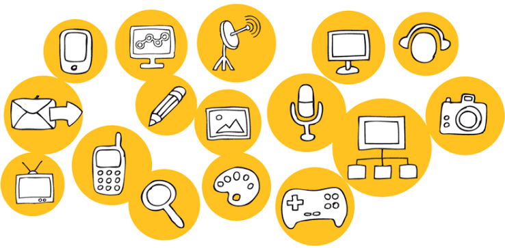
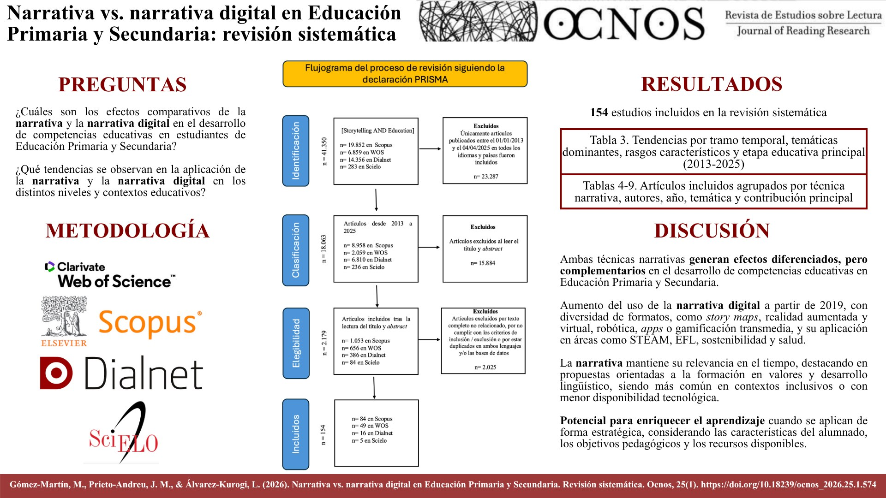

¿Qué cambia cuando una historia deja de ser solo contada y pasa a ser interactiva?
La narrativa audiovisual ha evolucionado desde los formatos tradicionales, principalmente lineales, hacia modelos digitales, transmedia y participativos. Karbaum Padilla (2021) y Ruano-López et al. (2022) muestran cómo las nuevas tecnologías han cambiado la manera de producir y consumir contenido. La narrativa digital amplía las posibilidades de comunicación, pero esto no le hace perder valor a la narrativa tradicional.
¿Qué gana el lector o usuario?
La narrativa digital permite que el usuario tenga un papel más activo: ya no se limita a escuchar o recibir una historia, sino que puede interactuar con ella, comentarla, compartirla (Ruano-López et al., 2022) e incluso producir nuevo contenido (Karbaum Padilla, 2021; Muñoz-Rico, 2022). Además, una misma narrativa puede contarse desde diferentes formatos y plataformas, mezclando video, texto e imágenes (Muñoz-Rico, 2022). Así, el usuario tiene más posibilidades de explorar el contenido y relacionarse con él.

¿Qué desventajas tiene la narrativa digital?
Esta narrativa también presenta debilidades y riesgos. Al haber muchas plataformas, contenidos y posibilidades de interacción, el relato puede volverse más complejo y fragmentado; además, el usuario puede encontrarse con información poco confiable o perder el sentido central de la historia. Por otro lado, existe una dependencia de las tecnologías y plataformas digitales, que pueden modificar la manera en que el contenido llega al público (Karbaum Padilla, 2021).

¿Qué se pierde y qué se conserva de la narrativa tradicional?
La narrativa tradicional conserva algo valioso: un mayor control sobre la estructura y el desarrollo del relato. Su carácter principalmente lineal hace que el autor establezca con mayor claridad el recorrido de la historia y que el lector siga una línea determinada (Orihuela, 1997). Frente a los entornos digitales, esta estructura puede favorecer la continuidad y la profundidad de los relatos.
Conclusión
En mi opinión, la narrativa digital no debe considerarse un reemplazo absoluto de la tradicional, sino una evolución que amplía las posibilidades de estas narrativas; de hecho, Gómez-Martín et al. (2026) señalan que ambas generan efectos diferenciados, pero complementarios, en el desarrollo de competencias educativas. Su principal fortaleza es hacer que el lector participe más en la obra y permitir que las historias trasciendan un único formato; sin embargo, la narrativa tradicional nos sigue ofreciendo relatos estructurados y controlados. Por eso, el verdadero valor de la narrativa digital está en aprovechar su capacidad de interacción sin perder la coherencia y la profundidad que caracterizan a una buena historia.
Referencias
Gómez-Martín, M., Prieto-Andreu, J. M. y Álvarez-Kurogi, L. (2026). Narrativa vs. narrativa digital en Educación Primaria y Secundaria. Revisión sistemática. Ocnos, 25(1). https://doi.org/10.18239/ocnos_2026.25.1.574
Karbaum Padilla, G. (2021). Una historia audiovisual. En La evolución de la narrativa audiovisual: analógica, transmedia y social media (pp. 18–60). Universidad Peruana de Ciencias Aplicadas (UPC).
Muñoz-Rico, M. (2022). Las sagas literarias y sus universos fandom. El caso de Harry Potter como modelo de narrativa transmedial. En G. Paredes Otero (Coord.), Narrativas y usuarios de la sociedad transmedia (pp. 239–262). Dykinson.
Orihuela, J. L. (1997). Narraciones interactivas: el futuro no lineal de los relatos en la era digital. Palabra Clave, (2), 37–46. https://palabraclave.unisabana.edu.co/index.php/palabraclave/article/view/338
Ruano-López, S., Fernández-Falero, M. R. y Trabadela-Robles, J. (2022). La televisión social y la interactividad con las audiencias televisivas a través de las redes sociales: estudio de caso. En G. Paredes Otero (Coord.), Narrativas y usuarios de la sociedad transmedia (pp. 300–318). Dykinson.
The Social Media Family. (2021, 31 de agosto). ¿Qué es la narrativa transmedia? https://thesocialmediafamily.com/transmedia/